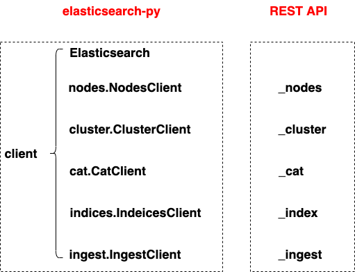

pip install elasticsearch # install latest version
pip install elasticsearch7 # install 7.0
from elasticsearch7 import Elasticsearch
es = Elasticsearch([{'host': 'localhost', 'port': 9200}])
# Cluster health
# GET _cluster/health
es.cluster.health(wait_for_status='yellow', request_timeout=1)
# Node info
# GET _nodes/stats
es.nodes.stats()
# List indices
# GET /_cat/indices
print(es.cat.indices())
es.indices.get_alias("*")
# create an index
# instead of raising an exception, return an 400 error message in json format
es.indices.create(index='test-index', ignore=400)
# insert a document
es.index(index ='test-index', document = {"Firstname":"Lin","Lastname":"Chen"})
# insert a document with the id
es.index(index ='test-index', id = 1, document = {"Firstname":"Lin","Lastname":"Chen"})
# get a document
es.get(index="my-index", id="1")
# get the information of an index
es.indices.stats(index='test-index')
# update a document
es.update(index="test-index", id="1", body = {"doc":{"Firstname":"Unknown","Lastname":"Unknown"}})
# delete index
es.indices.delete(index='test-index')
# delete a document
es.delete(index="test-index", id=1)
actions = [
{
"_index": "tickets-index", # index name
"_type": "_doc",
"_id": j, # if no _id, a random id is created
"_source": { # features are contained inside _source
"any":"data" + str(j),
"timestamp": datetime.datetime.now()}
}
for j in range(0, 10)
]
helpers.bulk(es, actions)
records = helpers.scan(es,
query={"query": {"match": {"proto": "udp"}}},
index=index_name,
) # return a generator
actions = [
{
"_index": "tickets-index",
"_type": "tickets",
"_id": j,
"_source": {
"any":"data_update" + str(j),
"timestamp": datetime.datetime.now()}
}
for j in range(0, 10)
]
helpers.bulk(es, actions) # overwrite the old records
# query all
es.search(index='my-index')
# Search between two date
es.search(index='news_headline', body = {"query":{"range":{"date":{"gte":"2017-05-28T00:00:00.000-04:00","lt":"2017-12-26T00:00:00.000-05:00"}}}})
# query multiple fields
es.search(index='news_headline', body = {"query":{"multi_match":{"query":"Michelle Obama","fields":["headline","short_description","authors"]}}})
# combine multiple queries
body = {'query': {'bool': {'must': [{'match': {'gender': 'male'}}, {'range': {'age': {'gte': 25}}}]}}}
res = es.search(index='my-index', body=body)
es.search(index='news_headline', body = {"aggs":{"by_category":{"terms":{"field":"category","size":100}}}})
es.search(index='news_headline', body = {
"query": {
"match": {
"category": "ENTERTAINMENT"
}
},
"aggs": {
"popular_in_entertainment": { # aggregation name
"significant_text": { # aggregation type
"field": "headline"
}
}
}
})
es.indices.get_mapping(index = 'news_headline')
mapping = {
"mappings": {
"properties": {
"botanical_name": {
"enabled": False # disabled to save disk space
},
"country_of_origin": { # text and keyword
"type": "text",
"fields": {
"keyword": {
"type": "keyword"
}
}
},
"date_purchased": { # date
"type": "date"
},
"description": { # text
"type": "text"
},
"name": { # text
"type": "text"
},
"produce_type": { # keyword
"type": "keyword"
},
"quantity": {
"type": "long"
},
"unit_price": {
"type": "float"
},
"vendor_details": {
"enabled": False
}
}
}
}
es.indices.create(index="index_with_mapping", body=mapping)
# step 1, fetch the first page, get a scroll id
scroll = '2m' # set up alive time
body = {"query": {"match_all": {}}} # query
page = es.search(index='my-index', body=body, scroll=scroll, size=2)
# step 2, fetch the next page with scroll id
scroll_id = page['_scroll_id']
page = es.scroll(scroll_id=scroll_id, scroll=scroll)
# define a generator
def scroll_page(es, index, body, scroll, size, **kw):
page = es.search(index=index, body=body, scroll=scroll, size=size, **kw)
scroll_id = page['_scroll_id']
hits = page['hits']['hits']
while len(hits):
yield hits
page = es.scroll(scroll_id=scroll_id, scroll=scroll)
scroll_id = page['_scroll_id']
hits = page['hits']['hits']
scroll = '2m'
body = {"query": {"match_all": {}}}
index = 'my-index'
size = 2
pages = scroll_page(es, index, body, scroll, size) # generator
for index, page in enumerate(pages):
print('Page '+str(index), [record['_id'] for record in page])